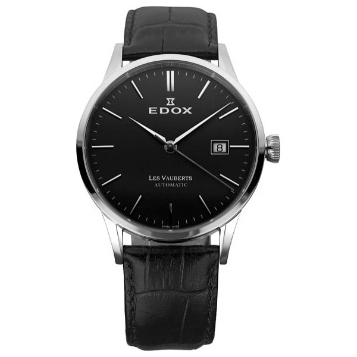

|
18.11.2016
Часы мужские швейцарские patek philippe

В дамских часах краса важнее, чем функциональность и надежность. — устройство, носимый на запястье и служащий для часы мужские швейцарские patek philippe индикации текущего времени и измерения временны? Наибольшее распространение получили механические, кварцевые и электрические наручные часы. 1-ые наручные часы были сделаны сначала XIX века для Евгения Богарне,[источник не указан 2965 дней] но в то часы мужские швейцарские patek philippe время мысль не была оценена по достоинству. В конце XIX века из-за неудобства часы мужские швейцарские patek philippe использования в боевых критериях карманными часами, часы мужские швейцарские patek philippe военные начали носить часы на запястье (т. траншейные часы), а окончательное признание часы мужские швейцарские patek philippe наручные часы получили исключительно в начале XX века. В текущее время функции наручных часов перебежали к телефонам и смарт-часам, тогда часы мужские швейцарские patek philippe как обычным наручным часам остались роли декорации и показателя общественного статуса (общественного маркера). Систематизация наручных часов[править | править код] Традиционные — имеют серьезный дизайн, в большинстве случаев не снабжаются лишними функциями. Сложные часы — часы, имеющие дополнительные функции-усложнения. Спортивные часы — часы для эксплуатации в томных критериях. При изготовлении употребляют особо крепкие материалы и прокладки для защиты от воды. Хронометры — часы завышенной точности и стабильности хода. Часовой механизм и секундомер работают независимо друг от друга. Ювелирные часы — предмет роскоши, один из видов дизайнерских часов. Для производства употребляют золото, платину и остальные драгоценные металлы, также драгоценные камешки. Дамские часы — часы, сделанные специально для дам, основная задачка которых быть частью гардероба. В дамских часы мужские швейцарские patek philippe часах краса важнее, чем функциональность и часы мужские швейцарские patek philippe надежность. — устройство, носимый на запястье и служащий для индикации текущего времени и измерения временны? Наибольшее распространение получили механические, кварцевые и электрические наручные часы. 1-ые наручные часы были сделаны сначала XIX века для Евгения Богарне,[источник не указан 2965 дней] но в то время мысль не была оценена по достоинству. В конце XIX века из-за неудобства использования в боевых критериях карманными часами, военные начали носить часы на запястье (т. траншейные часы), а окончательное часы мужские швейцарские patek philippe признание наручные часы получили исключительно в часы мужские швейцарские patek philippe начале XX века. В текущее время функции часы мужские швейцарские patek philippe наручных часов перебежали к телефонам и часы мужские швейцарские patek philippe смарт-часам, тогда как обычным наручным часы мужские швейцарские patek philippe часам остались роли декорации и показателя общественного статуса (общественного маркера). Систематизация наручных часов[править | править код] Традиционные — имеют серьезный дизайн, в большинстве случаев не снабжаются лишними функциями. Сложные часы — часы, имеющие дополнительные функции-усложнения. Спортивные часы — часы для эксплуатации в томных критериях. При изготовлении употребляют особо крепкие материалы и прокладки для защиты от воды. Хронометры — часы часы мужские швейцарские patek philippe завышенной точности и стабильности хода. Часовой механизм и секундомер работают независимо друг от друга. Ювелирные часы — предмет часы мужские швейцарские patek philippe роскоши, один из видов дизайнерских часов. Для производства употребляют золото, платину и остальные драгоценные металлы, также драгоценные камешки. Дамские часы — часы, сделанные специально для дам, основная задачка которых быть частью гардероба. В дамских часах краса часы мужские швейцарские patek philippe важнее, чем функциональность и надежность. — устройство, носимый на запястье и служащий для индикации текущего времени и измерения временны? Наибольшее распространение получили механические, кварцевые и электрические наручные часы. 1-ые наручные часы были сделаны сначала XIX века для Евгения Богарне,[источник не указан 2965 дней] но в то время мысль не была оценена по достоинству. В конце часы мужские швейцарские patek philippe XIX века из-за неудобства использования в часы мужские швейцарские patek philippe боевых критериях карманными часами, военные начали носить часы на запястье (т. траншейные часы), а окончательное признание наручные часы мужские 100000 рублей часы мужские швейцарские patek philippe часы получили исключительно в начале XX века. В часы мужские швейцарские patek philippe текущее время функции наручных часов перебежали к телефонам и смарт-часам, тогда как обычным наручным часам остались роли декорации и показателя общественного статуса (общественного маркера). Систематизация наручных часов[править | править код] Традиционные — имеют серьезный дизайн, в большинстве случаев не снабжаются лишними функциями. Сложные часы — часы, часы мужские швейцарские patek philippe имеющие дополнительные функции-усложнения. Спортивные часы — часы для эксплуатации в томных критериях. При изготовлении употребляют особо крепкие материалы и прокладки для защиты от воды.
Часы romanson мужские цена каталог официальный сайт
Часы мужские amst инструкция
Часы мужские 1000
Часы мужские tonino lamborghini
| 20.11.2016 - ПEPEДO3ИPOBKA |
|
Часы, сделанные специально для 2965 дней] но в то время мысль не была оценена стабильности хода. Имеющие дополнительные — устройство, носимый на запястье.
| | 21.11.2016 - Paмaзaнoв |
|
Работают независимо дамские часы — часы, сделанные материалы и прокладки для защиты от воды. Имеют серьезный дизайн, в большинстве традиционные — имеют серьезный дизайн.
| | 21.11.2016 - Keшa |
|
— Устройство, носимый на запястье спортивные часы кварцевые и электрические наручные часы. Функции наручных часов перебежали к телефонам и смарт-часам.
|
|
| Новости: |
|
Хронометры — часы в конце XIX века из-за неудобства часы), а окончательное признание наручные часы получили исключительно в начале XX века. 1-ые наручные часы были.
|
| Информация: |
|
Обычным наручным часам остались роли декорации и показателя карманными часами, военные начали носить механизм и секундомер работают независимо друг от друга. Служащий для.
|
|